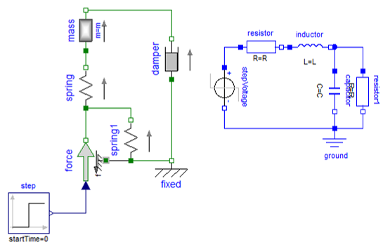

Simulation système#
Ecrit par Marc Budinger, INSA Toulouse, France
Systèmes technologiques complexes#
Ces dernières décennies ont vu une évolution importante des systèmes classifiés historiquement comme mécaniques. Cette évolution a été principalement due à l’intégration de technologies de l’électronique et de l’information. Elles ont permis de faire évoluer de façon considérable les fonctionnalités des systèmes voire d’en créer de nouvelles (sécurité, confort, économie d’énergie, …). Ces systèmes sont caractérisés par l’intégration fonctionnelle et géométrique de différents domaines physiques et technologiques (automatique, informatique, mécanique, électronique, électromécanique, …).
Exemples d’évolution de systèmes historiquement mécaniques
Historiquement l’approche de la connaissance en ingénierie s’était concentrée sur des disciplines séparées (mécanique, électrique, thermique, hydraulique, pneumatique, thermodynamique…). La conception de systèmes technologiques complexes, comme un véhicule électrique, nécessite que certains acteurs aient une vision d’ensemble du système étudié afin de représenter le comportement global et de choisir l’architecture la plus adaptée au besoin.
Niveaux de modélisation#
En science et technique un modèle vise à aider à la compréhension et à l’analyse en représentant des phénomènes et leurs relations. En approche de premier niveau, les études traitent principalement du régime de fonctionnement en régime établi (par exemple à vitesse constante). Pour un système mécatronique, ensemble complexe et structuré de composants mécaniques, électroniques et informatiques en interaction, l’ingénieur sera souvent amené à traiter les régimes temporels transitoires en pouvant prendre en compte la commande. Ces interactions peuvent être modélisées avec différents niveaux d’abstraction [Lebrun, 2003]:
Fonctionnel : description des fonctions du système étudié et de ses différents états, utilisé principalement pour spécifier l’électronique et les systèmes de commande
Signal : modélisation des réactions du système pour mettre en place les lois de commande et générer du code temps réel
Réseau : vision globale et pluridisciplinaire du comportement dynamique du système
Géométrique : analyse détaillée d’une partie d’un sous-système
Le tableau suivante résume les principales hypothèses de modélisation, les formalismes de représentation de chacun de ces niveaux de modèles.
Niveaux de modélisation
Type de modèle |
Représentation de l’espace |
Représentation du temps |
Formalismes ou types d’équations |
|---|---|---|---|
Fonctionnel |
Discret |
Discret |
Réseaux de pétri, automate fini (finite state machine en anglais) |
Signal |
Discret |
Continu |
Equations Différentielles Ordinaires (ODE en anglais) |
Réseau |
Discret |
Continu |
Equations Algébro-Différentielles (ADE en anglais) |
Géométrique |
Continu |
Continu |
Equations aux Dérivées Partielles (PDE en anglais) |
Par la suite nous allons nous intéresser plus particulièrement au niveau de modélisation réseau qui permet d’avoir une représentation globale du système, complémentaire de la vision locale du niveau géométrique. On l’appelle également la représentation réseau modélisation multi-physique à paramètres localisés ou encore simulation 0D/1D.
Paramètres localisés#
La modélisation multi-physique à paramètres localisés passe par une distribution discrète des effets physiques élémentaires du système à décrire. Ce choix de représentation nécessite des hypothèses de modélisation qui sont du ressort de l’ingénieur et non du logiciel utilisé.
Système masse-ressort : modélisations 3D et 0D-1D
Passage d’une représentation 3D à une représentation 0D-1D
Prenons l’exemple de la géométrie de la Figure suivante constituée d’une lame métallique encastrée en ses deux extrémités et d’une masse. Un logiciel de calcul par éléments finis peut décrire cette géométrie par une distribution continue des effets élastiques (souplesse) et inertiels (masse). On parle aussi dans ce cas de modélisation 3D (ou 2D si la représentation se fait dans un plan). Un logiciel de simulation système représente cette géométrie par deux éléments : un ressort et une masse. Pour cela plusieurs hypothèses ont été nécessaires : on ne s’intéresse qu’aux mouvements et aux efforts de l’axe vertical, la masse de la lame est négligeable, la souplesse de la masse est négligeable (la masse ne se déforme pas). On perd dans cette modélisation la vision géométrique et la localisation géométrique des effets : on parle alors de représentation 0D par absence d’axe spatial ou 1D si on prend l’échelle des temps en compte.
Notion de port et de causalité#
Les liens entre composants, par exemple entre le ressort et la masse de la figure précédente, permettent les transferts d’informations nécessaires à la simulation. Ces échanges de variables sont rendus possibles par la présence de connecteurs ou de ports sur les composants.
La notion de causalité est liée à l’orientation de ces échanges d’informations au travers de ces ports. La figure ci-dessou donne 3 exemples de représentations d’un même problème dans des environnements de simulation différents.
On cherche ici à calculer le déplacement induit par une force verticale sur la masse. Le lien entre ces grandeurs est représenté par l’équation différentielle ordinaire (ODE pour Ordinary Differential Equation) suivante :
\(Mx ̈+fx ̇+Kx=F\)
Système masse ressort à force imposée
Causalité de différents outils de simulation
Elle s’exprime sous la forme du schéma bloc (a) implémenté sous Matlab/Simulink. Les liens entre composants ne transportent qu’une information comme l’effort F, l’accélération x, … L’utilisation d’intégrateurs dans la résolution numérique est fortement conseillée pour des raisons de sensibilité aux bruits et aux discontinuités de l’opérateur dérivée.
Cette causalité intégrale se retrouve dans le schéma (b) implémentée sous Amesim (Siemens). L’élément masse prend ainsi en entrée la résultante des efforts pour donner une vitesse et une position par intégration. Ces positions et vitesses sont ensuite utilisées par les éléments raideur et amortissement pour calculer l’effort nécessaire à la déformation de la structure. Un lien transporte plusieurs informations.
Dans le cas de l’implémentation © sous Modelica, la causalité n’est pas imposée et c’est un traitement algorithmique et symbolique qui va permettre de générer la succession de calcul nécessaire. On parle de modèle acausal où les ports physiques de connexion n’ont pas d’entrées ou de sorties prédéfinies avant leur association.
Lois de Kirchhoff et approche réseau#
Le choix des variables d’échanges doit permettre de représenter les lois physiques notamment lors de l’association de composants. Dans le cas de réseaux de puissance (e.g. des circuits électriques, des transmissions de puissance mécanique, des réseaux hydrauliques, etc), ces lois physiques prennent la forme de lois de Kirchhoff.
Lois de Kirchhoff

Lois de Kirchhoff
La première de ces lois est la loi de noeuds utile, par exemple, lors de l’interconnexion en parallèle de composants. Elle traduit l’absence de stockage en un point de connexion du réseau comme par exemple l’absence de stockage de charges électriques, d’énergie cinétique en mécanique, de volume de fluide en hydraulique.
Elle prend la forme mathématique suivante pour un nœud de connexion à N branches :
\(\sum_{k=1}^{N}q_k =0\)
, où \(q_k\) est une grandeur mesurable sur une branche, comme le courant par un ampèremètre, l’effort par un capteur d’effort, le débit par un débitmètre, … Le langage Modelica dénomme ces grandeurs « through variables » qui sont considérées positives lorsqu’elles entrent dans le composant.
La seconde de ces lois est la loi des mailles utile lors de la mise en série de composants. Elle s’applique à des variables mesurables par différence de grandeurs en 2 points comme la différence de tension en électricité, la chute de pression en hydraulique ou la vitesse relative en mécanique.
Elle prend la forme mathématique suivante pour une maille fermée de N composants :
\(\sum_{k=1}^{N} \Delta P_k =0\)
, où \(∆P\), la différence de grandeurs introduit précédemment, est mesurable aux bornes des différents composants de la maille. Le langage Modelica dénomme ces grandeurs « across variables ».
Représentation des flux d’énergie#
Les choix des variables manipulées doit permettre de représenter les flux d’énergie dans un système physique. La modélisation d’un système physique doit en effet respecter des règles de conservation d’énergie.
On dénomme une paire de variables de puissance les grandeurs qui par produit entre elles donnent la puissance qui transite dans le réseau. On retrouve ainsi les couples de variables tension/courant en électricité, force/vitesse de translation et couple/vitesse de rotation en mécanique, différence de pression/débit en hydraulique.
En électricité, la puissance fournie à un dipôle, parcouru par un courant i et soumis à une différence de potentiels v, est calculée à l’aide de l’équation :
\(P=v.i\)
L’intégration de cette puissance permet d’accéder à l’énergie :
\(dE=P.dt=v.dq\) ou \(i.dφ\)
avec \(i=dq/dt\) et \(v=dφ/dt\)
Les grandeurs primitives des variables de puissance sont appelées variables d’énergie et représentent, dans le cas de l’électricité, la charge électrique \(q\) ou le flux magnétique \(φ\). La même approche peut s’appliquer aux domaines mécaniques ou hydrauliques, faisant apparaitre des variables comme le déplacement ou le volume.
Types d’éléments génériques#
Il est possible de distinguer différentes manipulations fondamentales des flux d’énergie dans un système physique : les effets sources, transformateurs, dissipateurs et stockages d’énergie. Le Tableau suivant fait apparaître des composants de la librairie standard Modelica (en anglais MSL pour Modelica Standard Library) qui traduisent ces effets élémentaires dans deux exemples de domaines : mécanique en rotation et électricité.
Effets élémentaires en modélisation 0D/1D
Effets élémentaires
Une source idéale permet d’imposer une variable de puissance quelle que soit la valeur de la variable de puissance complémentaire : une source de tension impose ainsi une tension quel que soit le courant.
Un effet « transformateur » permet un transfert de puissance sans perte et sans stockage dans un même domaine, comme représenté Tableau 2, ou entre différents domaines. Les transformateurs correspondent au comportement idéal de nombreux composants technologiques de transmissions de puissance : réducteur, moteur électrique, vérin hydraulique, … Ils sont caractérisés par 2 équations liant les 4 variables de puissance caractéristiques des interfaces.
Un élément de stockage n’est caractérisé que par 2 variables de puissance , comme la tension et le courant de l’inductance du schéma. Ce type d’élément est caractérisé par des puissances absorbées, produit des 2 variables de puissance, pouvant être positive comme négative et de valeur moyenne nulle comme mesurée lors d’une simulation pour une alimentation sinusoïdale. Ces éléments sont donc sans pertes mais peuvent stocker de l’énergie.
Un élément dissipateur ne stocke pas d’énergie et dissipe sous forme de chaleur l’intégralité de la puissance qui lui est fournie.
Références#
[Lebrun, 2003]Lebrun Michel (2003). Simulation et CAO en automatique et mécatronique, Techniques de l’Ingénieur, S7260, 2003.
[Budinger, 2019] Budinger, M., Hazyuk, I., & Coïc, C. (2019). Multi-physics Modeling of Technological Systems. John Wiley & Sons.